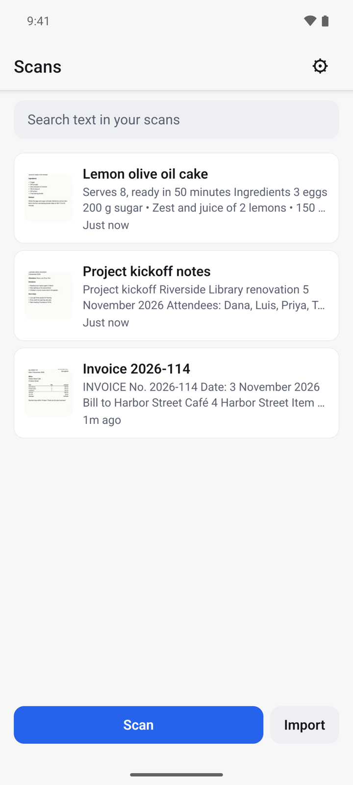

Fungsi apl ini
OCRScanner menggambar halaman kertas, meluruskannya dan membaca teksnya terus di telefon anda. Anda boleh mengedit dan menyalin teks itu, mencari dalam semua imbasan anda, dan berkongsi imbasan sebagai PDF yang boleh dicari, fail teks atau imej.
- Pengecaman teks berjalan pada peranti anda dan berfungsi tanpa internet.
- Tanpa akaun. Imbasan anda kekal di telefon dan tidak pernah dimuat naik.
- Import PDF, atau kongsi imej dari apl lain pada Android.
- Percuma dengan iklan. Pembelian Premium sekali bayar membuang iklan dan menambah lebih banyak bahasa.
Mulakan
- Buka OCRScanner. Senarai Scans kosong pada kali pertama.
- Ketik Scan untuk menggunakan kamera, atau Import untuk memilih foto yang sudah ada.
- Benarkan kamera apabila Android bertanya. Import tidak memerlukan akses kepada seluruh pustaka foto anda.

Imbas satu halaman
- Ketik Scan dan halakan kamera ke arah halaman. Ketik butang pengatup untuk mengambil foto.
- Pada Review, tepi halaman dikesan untuk anda. Seret sudut biru jika sesuatu tepi tersasar, atau ketik Full page untuk mengekalkan keseluruhan foto.
- Pilih penapis untuk membersihkan halaman: Original, Magic, Gray atau B&W.
- Ketik Rotate 90° jika halaman terbalik ke tepi, atau Retake untuk mengambil fotonya semula.
- Ketik Recognize text.

Untuk mengimbas beberapa halaman ke dalam satu dokumen, buka imbasan itu kemudian, ketik ⋯ dan pilih Add pages.
Import PDF
OCRScanner membaca sehingga 20 halaman daripada satu PDF, atau 50 halaman dengan Premium. Setiap halaman dibaca sebagai imej, jadi teks yang sudah ada dalam PDF tidak digunakan.
- Pilih satu PDF dalam pemilih fail telefon anda. Tiada kebenaran storan diperlukan.
- Pada Review, semak halaman-halaman itu. Jika PDF melebihi had, Review akan memberitahu anda berapa halaman yang ditinggalkan.
- Ketik Recognize text.
Kongsi imej dari apl lain
Ini berfungsi pada Android.
- Dalam galeri anda atau apl lain, pilih sehingga 20 imej dan ketik kongsi.
- Pilih OCRScanner.
- Buka kunci apl jika App lock dihidupkan. Imej dibuka pada Review sebagai imbasan baharu.
Jika anda mempunyai halaman yang belum disimpan, apl akan bertanya dahulu sebelum menggantikannya.
Baca, edit dan salin teks
- Selepas pengecaman, Result menunjukkan halaman di atas dan teksnya di bawah.
- Ketik satu baris teks untuk melihat kedudukannya pada halaman. Ketik satu perkataan pada halaman untuk melompat ke barisnya.
- Baris yang apl kurang pasti diserlahkan, supaya anda tahu apa yang perlu disemak.
- Ketik Edit untuk membetulkan teks, Copy untuk menyalinnya, atau Share untuk menghantarnya.
- Ketik Save untuk menyimpan imbasan dalam senarai anda.

Cari imbasan melalui teksnya
- Pada Scans, ketik Search text in your scans.
- Taip satu perkataan. Setiap imbasan yang mengandunginya disenaraikan, dengan padanan ditebalkan.
- Ketik satu hasil untuk membuka imbasan pada padanan itu.

Untuk melihat hanya imbasan dengan satu tag, ketik tag itu di bawah ruang carian. Carian kemudian hanya melihat dalam imbasan tersebut. Ketik tag itu sekali lagi untuk melihat semua imbasan.
Kongsi atau eksport
- Buka satu imbasan dan ketik butang kongsi.
- Pilih format:
- PDF: imej halaman dengan teks yang boleh dicari di belakangnya.
- Text file: teks biasa (.txt).
- Page image: simpan ke Photos atau hantar.
- Pilih apl untuk menghantarnya.

Namakan semula, letak tag dan padam
- Buka satu imbasan dan ketik ⋯.
- Pilih Rename untuk menukar tajuk, atau Edit tags untuk menambah tag yang dipisahkan dengan koma.
- Pilih Recognize text again untuk membaca semula halaman dalam bahasa teks yang lain. Teks yang telah anda edit akan diganti.
- Pilih Delete scan untuk membuangnya daripada telefon anda.
Sandar dan pulihkan imbasan anda
- Pada Scans, ketik ikon tetapan di bahagian kanan atas.
- Di bawah Storage, ketik Back up scans. Semua imbasan anda dibungkus ke dalam satu fail.
- Pilih tempat untuk menyimpan atau menghantar fail itu. Fail ini tidak disulitkan, jadi simpan di tempat yang selamat.
- Pada telefon baharu, ketik Restore from backup dan pilih fail itu. Apl akan bertanya dahulu sebelum menggantikan semua imbasan di telefon dengan imbasan dalam sandaran.
Kunci apl dan tukar tetapan
- Pada Scans, ketik ikon tetapan di bahagian kanan atas.
- Hidupkan App lock untuk memerlukan cap jari, wajah atau kunci skrin anda sebelum imbasan dibuka.
- Di bawah Text language (OCR), pilih skrip dokumen anda. Latin meliputi bahasa Inggeris, Sepanyol, Perancis, Jerman, Indonesia dan banyak lagi. Apl mencadangkan skrip yang digunakan oleh bahasa telefon anda.
- Ketik App language untuk menggunakan apl dalam bahasa yang berbeza daripada telefon anda.
- Pilih Image quality (Balanced atau Full) dan Theme (System, Light atau Dark).

Premium
Premium ialah satu bayaran sekali sahaja, bukan langganan. Buka Settings dan ketik See Premium. Ia memberi anda:
- Tanpa iklan.
- Teks Cina, Jepun dan Korea, serta teks Hindi dan Devanagari lain pada Android.
- Menggabungkan beberapa imbasan ke dalam satu PDF atau fail teks.
- Import PDF yang lebih panjang: sehingga 50 halaman, bukan 20.
Jika anda pernah membeli Premium, ketik Restore purchase pada skrin Premium.
Soalan lazim
Adakah ia berfungsi tanpa internet? Ya. Pengimbasan, pengecaman teks, carian dan eksport semuanya berjalan pada telefon anda.
Di mana imbasan saya disimpan? Hanya pada peranti anda. Jika anda menyahpasang apl, imbasan turut terbuang, jadi ketik Back up scans dalam Settings dahulu untuk menyimpannya.
Teks ada kesilapan. Apa yang boleh saya buat? Ambil semula foto dalam cahaya yang baik dengan halaman diletakkan rata, cuba penapis Magic atau B&W, dan semak bahawa Text language (OCR) sepadan dengan dokumen. Anda juga boleh membetulkan perkataan tertentu dengan Edit.
Bolehkah ia membaca tulisan tangan? Ia dibuat untuk teks bercetak. Tulisan tangan sering dibaca dengan salah.
Privasi
Dokumen anda tidak pernah dimuat naik. Versi percuma memaparkan iklan daripada Google AdMob. Baca dasar privasi yang penuh.